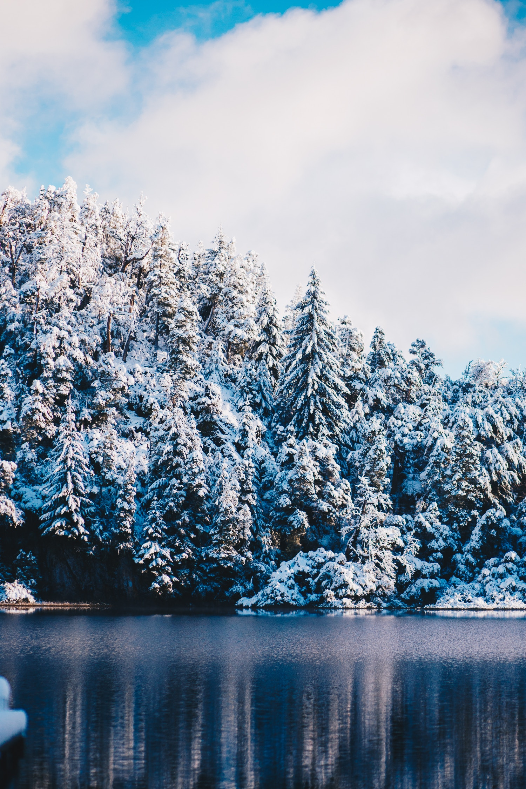
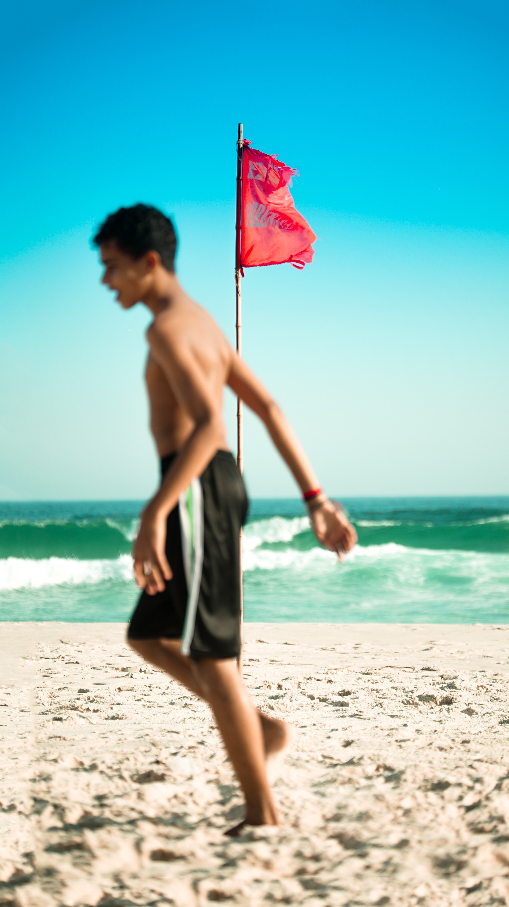

Festivals

Best beaches


Best beaches


Top-Roping

Wild nature

Dinning
The area now known as Argentina was relatively sparsely populated until the period of European colonization. The earliest traces of human life are dated from the Paleolithic period, and there are further signs in the Mesolithic and Neolithic.[1] However, large areas of the interior and Piedmont were apparently depopulated during an extensive dry period between 4000 and 2000 B.C.[2] The Uruguayan archaeologist Raúl Campá Soler divided the indigenous peoples in Argentina into three main groups: basic hunters and food gatherers, without development of pottery; advanced gatherers and hunters; and basic farmers with pottery.[3] The second group could be found in the Pampa and south of Patagonia, and the third one included the Charrúas and Minuane people and the Guaraníes.